<div id="mySidenav" class="sidenav" [ngClass]="{'open': isOpen, 'closed': !isOpen}">
  <div fxLayoutAlign="space-between center" style="height: 80px;   background-color: #017FD3; color: white;">
    <div class="logo" routerLink="main" (click)="toggle()" >
      
    </div>
    <div (click)="toggle()"  style="height: 24px;width: 24px; margin-right: 20px;" fxLayoutAlign="center center">
      <mat-icon  style="height: 24px;width: 24px">close</mat-icon>
    </div>
  </div>
  <div class="sidenav-buttons" fxLayoutAlign="center center" fxLayout="column">
    <div routerLink="/hjem" (click)="sidenavClose()" class="sidenav-btn" fxLayoutAlign="start center"><span>HJEM</span> <mat-icon>keyboard_arrow_right</mat-icon></div>
    <div routerLink="/kontakt" (click)="sidenavClose()" class="sidenav-btn" fxLayoutAlign="start center">KONTAKT <mat-icon>keyboard_arrow_right</mat-icon></div>
    <div routerLink="/om-oss" (click)="sidenavClose()"  class="sidenav-btn" fxLayoutAlign="start center">OM OSS <mat-icon>keyboard_arrow_right</mat-icon></div>
    <div routerLink="/events" (click)="sidenavClose()"  class="sidenav-btn" fxLayoutAlign="start center">EVENTS <mat-icon>keyboard_arrow_right</mat-icon></div>
  </div>
<!--
  <div fxLayoutAlign="center center" class="sidenav-sosial-icons">
    <a  target="_blank" rel="noopener" href="https://www.facebook.com/Intervindu.no/" >
      facebook
      &lt;!&ndash;&ndash;&gt;
    </a>
    <a target="_blank" rel="noopener" href="https://www.instagram.com/_intervindu.no_/">
      instagram
      &lt;!&ndash; &ndash;&gt;
    </a>
  </div>-->
</div>

